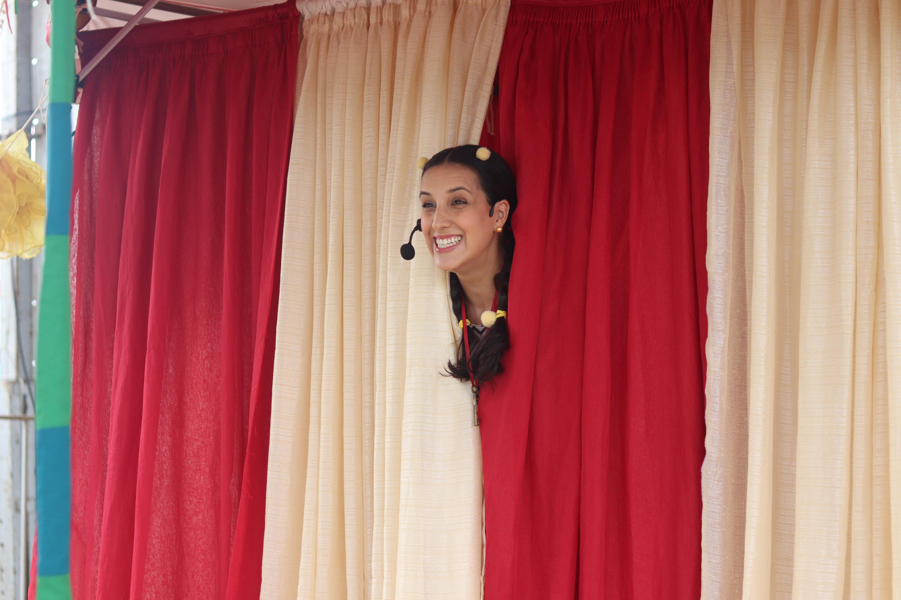
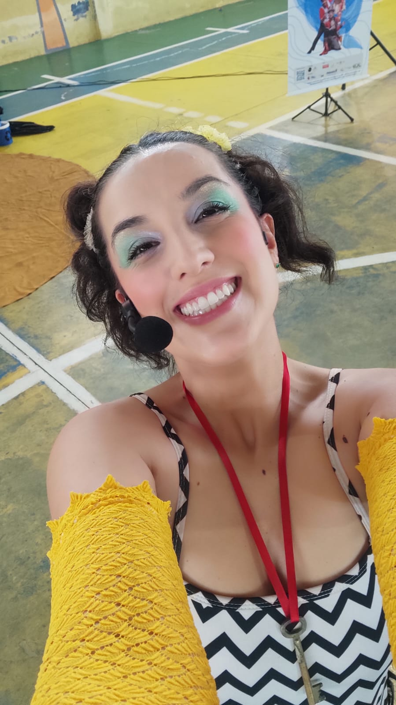
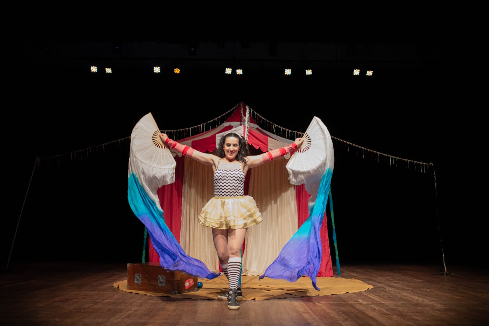
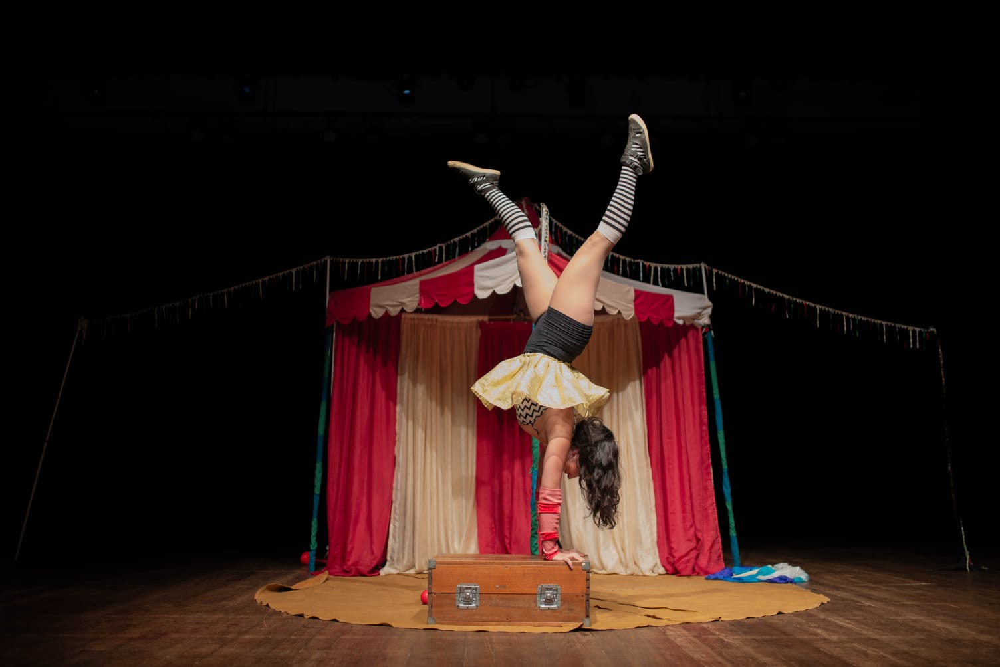
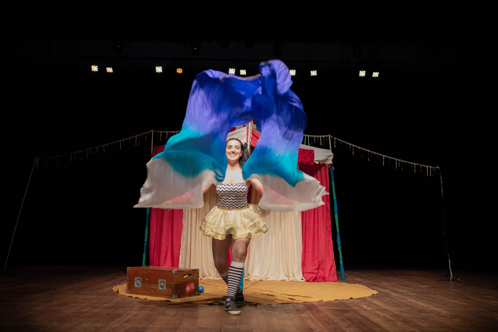
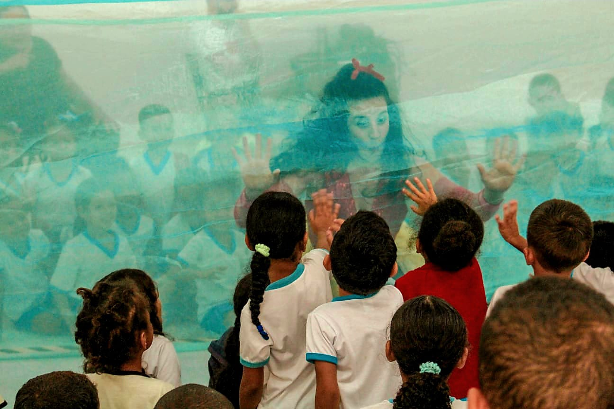
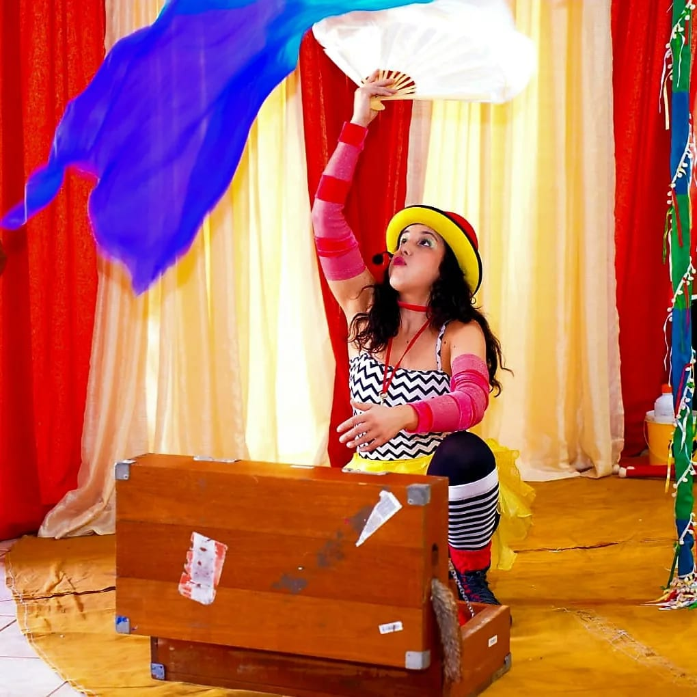
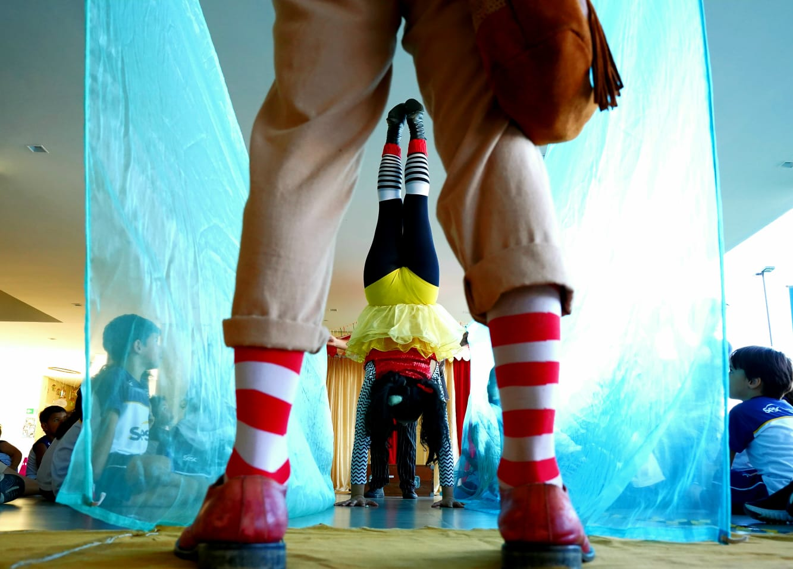

O espetáculo de circo-teatro “A Fonte Mágica” combina esquetes cômicas com mágica e malabarismo para abordar temas de educação ambiental. “A Fonte Mágica” já teve mais de 170 apresentações nos estados do Rio de Janeiro, São Paulo, Espírito Santo, Alagoas, Pará e Tocantins, sempre com uma excelente recepção por parte do público.







